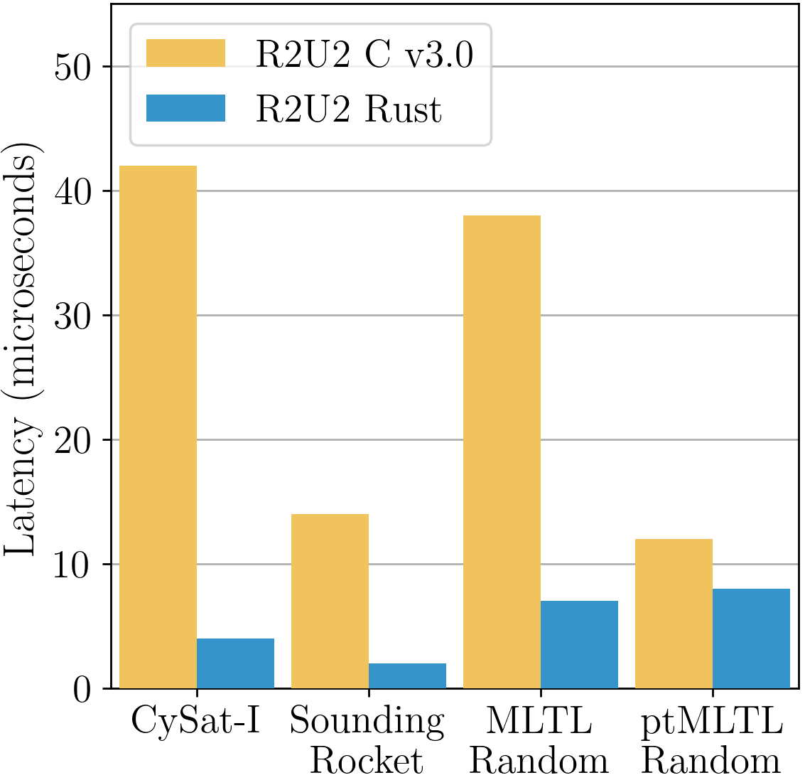
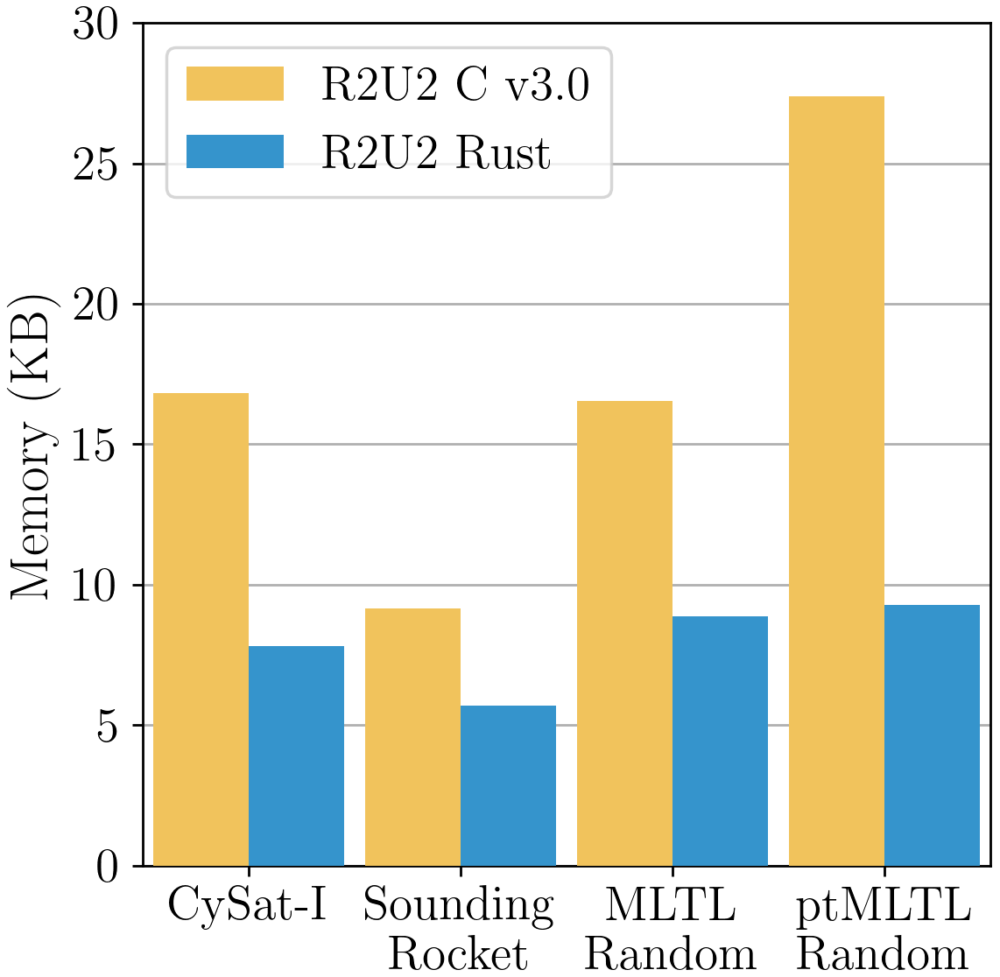
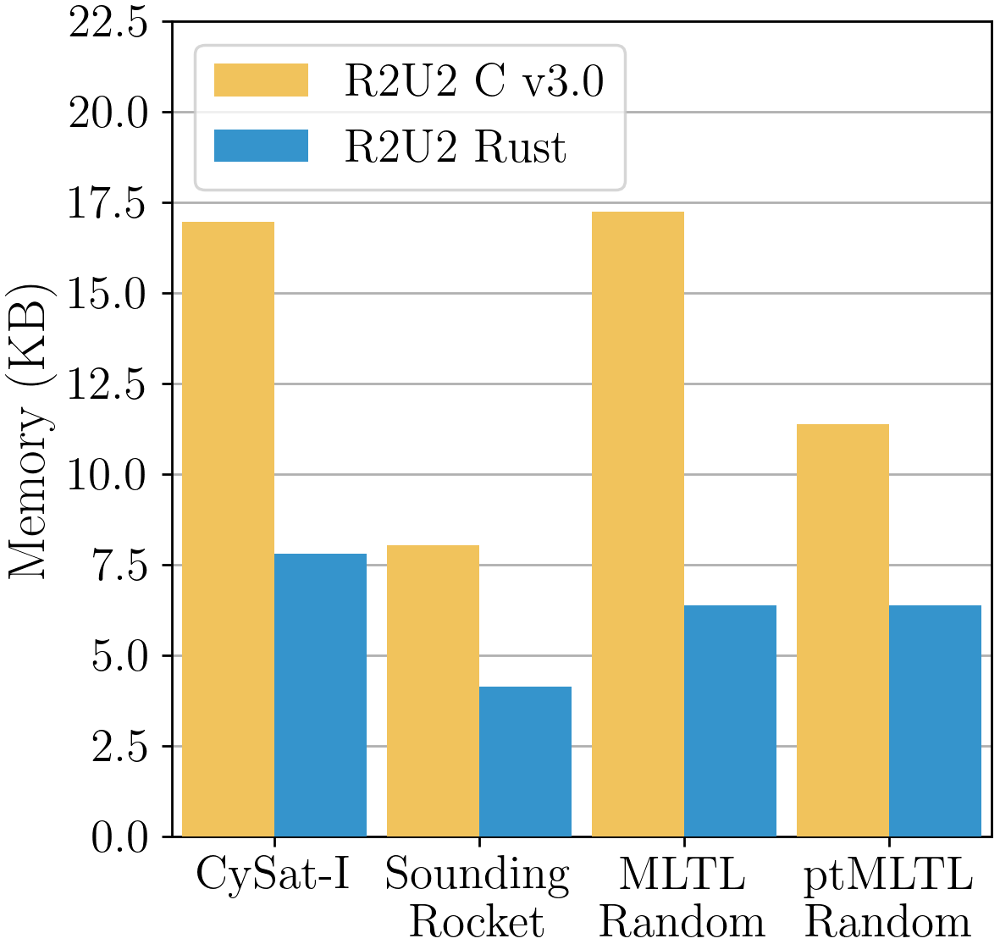

Towards a Safe, Verified Runtime Monitor for Embedded Systems: R2U2 in Embedded Rust
Alexis Aurandt, Phillip H. Jones, and Kristin Yvonne Rozier
This webpage contains further details and artifacts for reproducibility of the experiments in "Towards a Safe, Verified Runtime Monitor for Embedded Systems: R2U2 in Embedded Rust"
Latency Analysis

In Section 3.5, we observed the 95% tail latency (i.e., 95% of recorded latencies are less than or equal to the given latency) for each time step where | π |=1,000,000 on a 2.8 GHz Quad-Core Intel® i7 processor with 16GB of RAM as given in the image above. More specifically, a 1.5–10.5x decrease in latency was observed depending on the benchmark, which can mostly be accredited to the reduction of instructions through direct encodings. This latency decrease is also a result of a handful of other factors:
- The L1 Cache of the i7 processor is 32KB; therefore, the larger memory requirements of R2U2 v3.0 will actually lead to more cache misses. (Refer to the memory requirements displayed below.)
- Our implementation in safe Rust required less MOV assembly instructions compared to the C version due to removal of utilizing memcpy and redundant pointer dereferencing.
- The CySat and Sounding Rocket benchmarks were required to run with the original atomic checker in R2U2 C v3.0 due to a lack of support for the `rate` function in the booleanizer. In R2U2 Rust, the booleanizer was utilized as support of the `rate` function was added.
It is important to note that we do not observe as substantial of a latency decrease for the ptMLTL benchmark; this is a result of the following factors:
- We observe a reduction of instructions in terms of boolean operators but not in terms of temporal operators as R2U2 C v3.0 already provided direct encodings for all temporal operators.
- R2U2 C v3.0 encoded ptMTL instead of ptMLTL and did not evaluate as early-as-possible. In order to implement ptMLTL correctly, R2U2 encounters a higher latency for each temporal instruction.
For reference, here are the queue memory requirements:

For reference, here are the instruction memory requirements:
